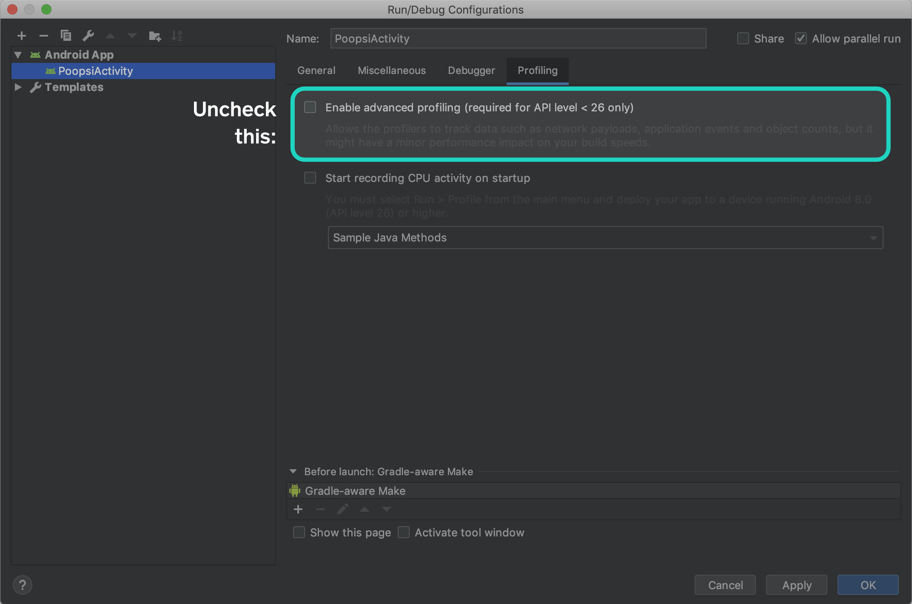

Upgrading to OkHttp 4¶
OkHttp 4.x upgrades our implementation language from Java to Kotlin and keeps everything else the same. We’ve chosen Kotlin because it gives us powerful new capabilities while integrating closely with Java.
We spent a lot of time and energy on retaining strict compatibility with OkHttp 3.x. We’re even
keeping the package name the same: okhttp3!
There are three kinds of compatibility we’re tracking:
-
Binary compatibility is the ability to compile a program against OkHttp 3.x, and then to run it against OkHttp 4.x. We’re using the excellent japicmp library via its Gradle plugin to enforce binary compatibility.
-
Java source compatibility is the ability to upgrade Java uses of OkHttp 3.x to 4.x without changing
.javafiles. -
Kotlin source compatibility is the ability to upgrade Kotlin uses of OkHttp 3.x to 4.x without changing
.ktfiles.
With a few small exceptions (below), OkHttp 4.x is both binary- and Java source-compatible with OkHttp 3.x. You can use an OkHttp 4.x .jar file with applications or libraries built for OkHttp 3.x.
OkHttp is not source-compatible for Kotlin callers, but upgrading should be automatic thanks to Kotlin’s powerful deprecation features. Most developers should be able to use IntelliJ’s Code Cleanup for a safe and fast upgrade.
Backwards-Incompatible Changes¶
OkHttpClient final methods¶
OkHttpClient has 26 accessors like interceptors() and writeTimeoutMillis() that were non-final
in OkHttp 3.x and are final in 4.x. These were made non-final for use with mocking frameworks like
Mockito. We believe subtyping OkHttpClient is the wrong way to test with OkHttp. If
you must, mock Call.Factory which is the interface that OkHttpClient implements.
Internal API changes¶
The okhttp3.internal package is not a published API and we change it frequently without warning.
Depending on code in this package is bad and will cause you problems with any upgrade! But the 4.x
will be particularly painful to naughty developers that import from this package! We changed a lot
to take advantage of sweet Kotlin features.
Credentials.basic()¶
The username and password parameters to Credentials.basic() are now non-null strings. In OkHttp
3.x, null would yield a username or password of “null”.
HttpUrl.queryParameterValues()¶
The return type of HttpUrl.queryParameterValues() is List<String?>. Lists that may contain null
are uncommon and Kotlin callers may have incorrectly assigned the result to List<String>.
Code Cleanup¶
IntelliJ and Android Studio offer a Code Cleanup feature that will automatically update deprecated APIs with their replacements. Access this feature from the Search Anywhere dialog (double-press shift) or under the Analyze menu.
We’ve included deprecated APIs in OkHttp 4.0 because they make migration easy. We will remove them in a future release! If you’re skipping releases, it’ll be much easier if you upgrade to OkHttp 4.0 as an intermediate step.
Vars and Vals¶
Java doesn’t have language support for properties so developers make do with getters and setters. Kotlin does have properties and we take advantage of them in OkHttp.
- Address: certificatePinner, connectionSpecs, dns, hostnameVerifier, protocols, proxy, proxyAuthenticator, proxySelector, socketFactory, sslSocketFactory, url
- Cache: directory
- CacheControl: immutable, maxAgeSeconds, maxStaleSeconds, minFreshSeconds, mustRevalidate, noCache, noStore, noTransform, onlyIfCached, sMaxAgeSeconds
- Challenge: authParams, charset, realm, scheme
- CipherSuite: javaName
- ConnectionSpec: cipherSuites, supportsTlsExtensions, tlsVersions
- Cookie: domain, expiresAt, hostOnly, httpOnly, name, path, persistent, value
- Dispatcher: executorService
- FormBody: size
- Handshake: cipherSuite, localCertificates, localPrincipal, peerCertificates, peerPrincipal, tlsVersion
- HandshakeCertificates: keyManager, trustManager
- Headers: size
- HeldCertificate: certificate, keyPair
- HttpLoggingInterceptor: level
- HttpUrl: encodedFragment, encodedPassword, encodedPath, encodedPathSegments, encodedQuery, encodedUsername, fragment, host, password, pathSegments, pathSize, port, query, queryParameterNames, querySize, scheme, username
- MockResponse: headers, http2ErrorCode, socketPolicy, status, trailers
- MockWebServer: bodyLimit, port, protocolNegotiationEnabled, protocols, requestCount, serverSocketFactory
- MultipartBody.Part: body, headers
- MultipartBody.: boundary, parts, size, type
- OkHttpClient: authenticator, cache, callTimeoutMillis, certificatePinner, connectTimeoutMillis, connectionPool, connectionSpecs, cookieJar, dispatcher, dns, eventListenerFactory, followRedirects, followSslRedirects, hostnameVerifier, interceptors, networkInterceptors, pingIntervalMillis, protocols, proxy, proxyAuthenticator, proxySelector, readTimeoutMillis, retryOnConnectionFailure, socketFactory, sslSocketFactory, writeTimeoutMillis
- PushPromise: headers, method, path, response
- Request: body, cacheControl, headers, method, url
- Response: body, cacheControl, cacheResponse, code, handshake, headers, message, networkResponse, priorResponse, protocol, receivedResponseAtMillis, request, sentRequestAtMillis
- Route: address, proxy, socketAddress
- TlsVersion: javaName
Renamed Functions¶
- Headers.of(): for symmetry with
listOf(),setOf(), etc., we’ve replacedHeaders.of(String...)withheadersOf(vararg String).
Extension Functions¶
We’ve migrated from static functions to extension functions where we think they fit.
| Java | Kotlin |
|---|---|
| Handshake.get(SSLSession) | SSLSession.handshake() |
| Headers.of(Map |
Map |
| HttpUrl.get(String) | String.toHttpUrl() |
| HttpUrl.get(URI) | URI.toHttpUrlOrNull() |
| HttpUrl.get(URL) | URL.toHttpUrlOrNull() |
| HttpUrl.parse(String) | String.toHttpUrlOrNull() |
| HttpUrl.uri() | HttpUrl.toUri() |
| HttpUrl.url() | HttpUrl.toUrl() |
| MediaType.get(String) | String.toMediaType() |
| MediaType.parse(String) | String.toMediaTypeOrNull() |
| RequestBody.create(ByteArray) | ByteArray.toRequestBody() |
| RequestBody.create(ByteString) | ByteString.toRequestBody() |
| RequestBody.create(File) | File.asRequestBody() |
| RequestBody.create(String) | String.toRequestBody() |
| ResponseBody.create(BufferedSource) | BufferedSource.asResponseBody() |
| ResponseBody.create(ByteArray) | ByteArray.toResponseBody() |
| ResponseBody.create(ByteString) | ByteString.toResponseBody() |
| ResponseBody.create(String) | String.toResponseBody() |
SAM Conversions¶
When you use Java APIs from Kotlin you can operate on Java interfaces as if they were Kotlin lambdas. The feature is available for interfaces that define a Single Abstract Method (SAM).
But when you use Kotlin APIs from Kotlin there’s no automatic conversion. Code that used SAM lambdas
with OkHttp 3.x: must use object : with OkHttp 4.x:
Kotlin calling OkHttp 3.x:
val client = OkHttpClient.Builder() .dns { hostname -> InetAddress.getAllByName(hostname).toList() } .build()
Kotlin calling OkHttp 4.x:
val client = OkHttpClient.Builder() .dns(object : Dns { override fun lookup(hostname: String) = InetAddress.getAllByName(hostname).toList() }) .build()
SAM conversion impacts these APIs:
- Authenticator
- Dispatcher.setIdleCallback(Runnable)
- Dns
- EventListener.Factory
- HttpLoggingInterceptor.Logger
- LoggingEventListener.Factory
- OkHttpClient.Builder.hostnameVerifier(HostnameVerifier)
JetBrains is working on SAM conversions of Kotlin interfaces. Expect it in a future release of the Kotlin language.
Companion Imports¶
The equivalent of static methods in Java is companion object functions in Kotlin. The bytecode is
the same but .kt files now need Companion in the import.
This works with OkHttp 3.x:
import okhttp3.CipherSuite.forJavaName
But OkHttp 4.x needs a Companion:
import okhttp3.CipherSuite.Companion.forJavaName
In the unlikely event that you have a lot of these, run this:
sed -i "" \ 's/^\(import okhttp3\.[^.]*\)\.\([a-z][a-zA-Z]*\)$/\1.Companion.\2/g' \ `find . -name "*.kt"`
Advanced Profiling¶
Android Studio’s Advanced Profiling feature rewrites OkHttp bytecode for instrumentation. Unfortunately it crashes on OkHttp 4.x’s bytecode. Until Google’s bug is fixed you must disable advanced profiling in Android Studio.

R8 / ProGuard¶
R8 and ProGuard are both code optimizers for .class files.
R8 is the default optimizer in Android Studio 3.4 and newer. It works well with all releases of OkHttp.
ProGuard was the previous default. We’re tracking problems with interactions
between ProGuard, OkHttp 4.x, and Kotlin-originated .class files. Make sure you’re on the latest
release if you’re using ProGuard,
Gradle¶
OkHttp 4’s minimum requirements are Java 8+ and Android 5+. These requirements were first introduced with OkHttp 3.13.
Here’s what you need in build.gradle to target Java 8 byte code for Kotlin, Java, and Android
plugins respectively.
compileKotlin {
kotlinOptions {
jvmTarget = "1.8"
}
}
compileTestKotlin {
kotlinOptions {
jvmTarget = "1.8"
}
}
compileJava {
sourceCompatibility = JavaVersion.VERSION_1_8
targetCompatibility = JavaVersion.VERSION_1_8
}
android {
compileOptions {
sourceCompatibility JavaVersion.VERSION_1_8
targetCompatibility JavaVersion.VERSION_1_8
}
}